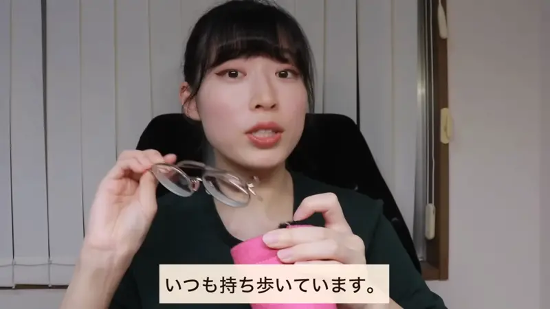
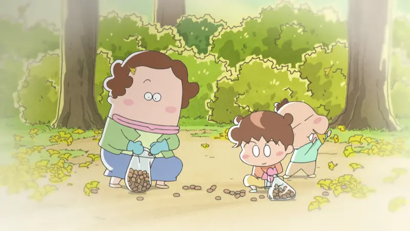
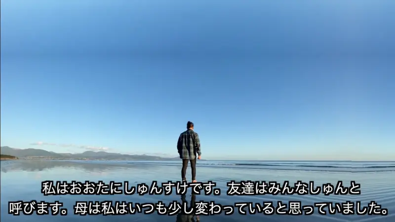
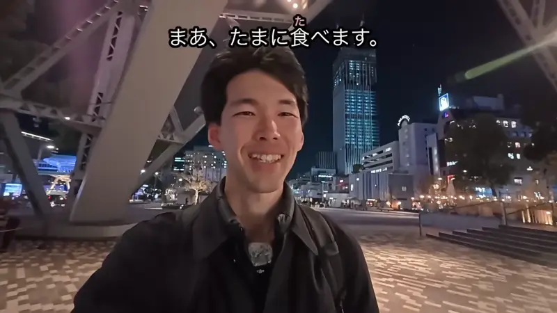

いつも・よく・時々

YouTube · video
いつも持ち歩いています。
"I always carry it with me."
いつも (always), よく (often) and 時々 (ときどき, sometimes) say how often something happens. They go before the action: いつも + 持ち歩いています.
On this card, the sentence answers "How often do you carry it?": every time. Without いつも it would just be "I carry it".
They never change. Polite or casual only shows at the end: いつも持ち歩いています / いつも持ち歩いてる.
Examples
A friend asks what you have for breakfast.
いつもパン。
"Always bread."
CasualThe café owner says they've seen you before.
よく来ます。
"I come here often."
PoliteA friend asks if you cook.
時々作る。
"Sometimes."
CasualA coworker asks if you watch Japanese TV.
時々ドラマを見ます。
"I watch dramas sometimes."
PoliteWith and without
いつも歩いて行きます。
"I always walk there."
よく歩いて行きます。
"I often walk there."
時々歩いて行きます。
"I sometimes walk there."
あまり歩いて行きません。
"I don't walk there much." あまり needs a negative at the end.
Sentence mining

New Atashin'chi · Episode 2
昔よくギンナン拾ったねえ。
"We used to pick ginkgo nuts a lot, didn't we?"
昔 (back then) + よく: something you did often in the past.

YouTube · video
母は私はいつも少し変わっていると思っていました
"My mother always thought I was a bit odd."
いつも + 変わっている: always a bit different.
Source unknown No source
お弁当もいつも豪華でうまそうで。
"And his bento is always so fancy and tasty-looking."
いつも + 豪華: always fancy. It works with describing words too.
Source unknown No source
僕は本屋さんで、よく立ち読みをします。
"I often read standing up in bookstores."
立ち読み is reading in a shop without buying.
Source unknown No source
私たちはメッセージに絵文字をよく使います。
"We often use emoji in messages."
よく can also sit right before the verb, after the object.

Source unknown No source
まあ、たまに食べます。
"Well, I eat it now and then."
たまに is "now and then", a bit rarer than 時々.
Spirited Away
あいつ 時々いなくなるんだよ。
"He just disappears sometimes."
時々 ("sometimes") + いなくなる ("disappears") = "sometimes disappears". んだよ: explaining.